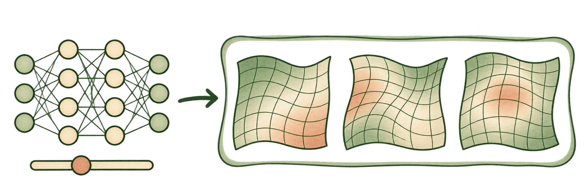
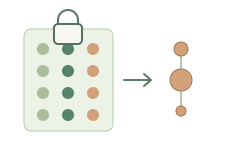
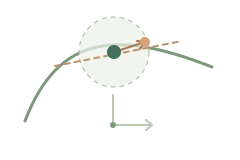
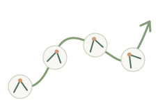
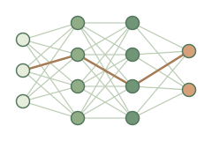
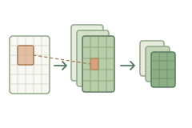
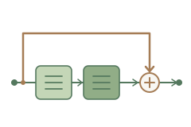
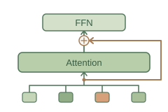

Learning features.
Understanding generalization.
Study how features form and evolve to understand neural-network training dynamics and generalization.
Research perspective
View neural-network regression as a feature map plus a linear readout, and study how the representation evolves during training.

For a neural network, different θ give different maps Φθ; β combines the features into a prediction.
Research strategy
From this perspective, take fixed, local and global views, then use concrete networks to test and refine the assumptions.

A family of abstract feature-map regressions

Static
Fix Φ; study estimation and prediction risk.

Local
Perturb Φ and β; retain first-order terms.

Global
Follow the joint evolution of Φₜ and βₜ.
Φ: feature map · β: readout coefficients · δ: small perturbation · t: training time
Network feedback refines assumptions
Apply and compare
Across neural architectures

Fully connected
CNN
ResNet
Transformer
The program targets a broad range of architectures, using concrete networks to test the theory and refine the feature-map family.
Academic homepageqianlin [at] tsinghua [dot] edu [dot] cn